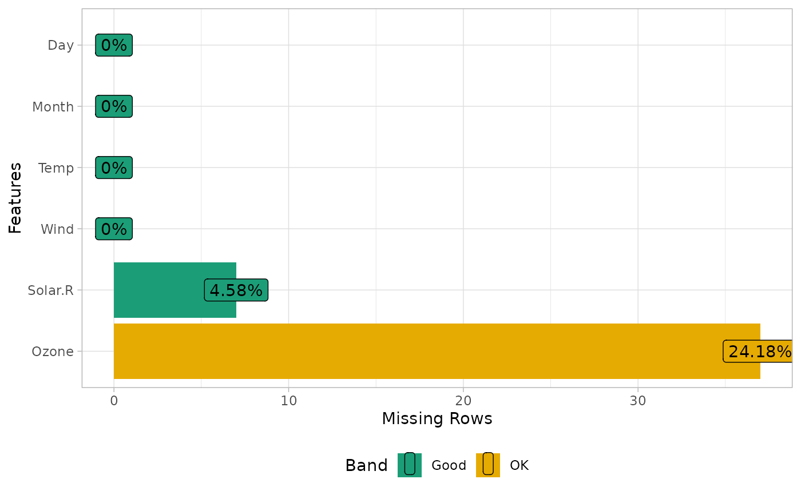
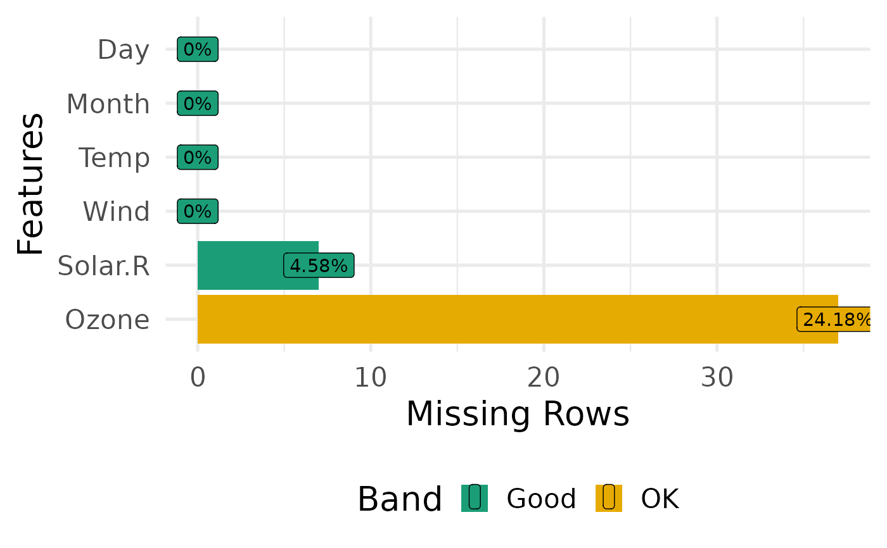

Default DataExplorer plotting function
plotDataExplorer.RdS3 method for plotting various DataExplorer objects
plotDataExplorer(plot_obj, title, ggtheme, theme_config, ...)
Arguments
| plot_obj | plot object |
|---|---|
| title | plot title |
| ggtheme | complete ggplot2 themes |
| theme_config | a list of configurations to be passed to theme |
| … | other arguments to be passed |
Value
invisibly return the named list of ggplot objects
Details
To change default font family and size, you may pass base_size and base_family to ggtheme options, e.g., ggtheme = theme_gray(base_size = 15, base_family = "serif")
theme_config argument expects all inputs to be wrapped in a list object, e.g., to change the text color: theme_config = list("text" = element_text(color = "blue"))
See also
Examples
library(ggplot2) # Update theme of any plot objects plot_missing(airquality, ggtheme = theme_light())# Customized theme components plot_bar( data = diamonds, theme_config = list( "plot.background" = element_rect(fill = "yellow"), "aspect.ratio" = 1 ) )